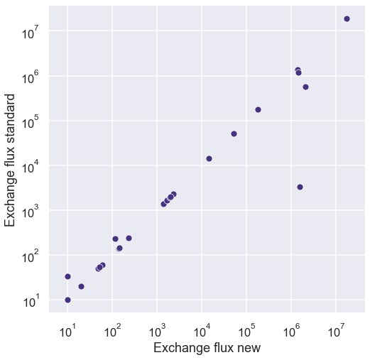
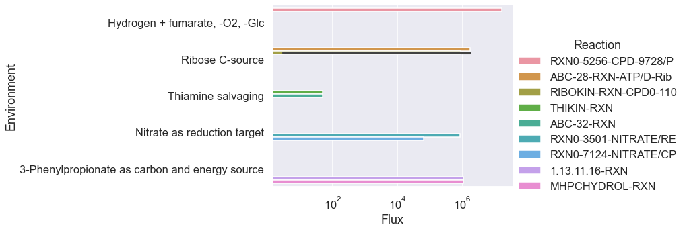

[29]:
import numpy as np
from scipy import linalg, special
from scipy.sparse import csr_matrix
import sympy
import seaborn as sns
import pandas as pd
import os
os.chdir(os.path.expanduser('~/vivarium-ecoli'))
import matplotlib.pyplot as plt
import dill
import cvxpy as cp
import copy
import requests
import xmltodict
from typing import Any, Iterable, Iterator, Mapping, Optional, Tuple, Union
from dataclasses import dataclass
from ecoli.processes.metabolism_redux import NetworkFlowModel, FlowResult
sns.set(style='darkgrid', palette='viridis', context='talk')
Import simulation output
[30]:
time = '10'
date = '2023-04-10'
experiment = 'fba-redux-standard'
entry = f'{experiment}_{time}_{date}'
folder = f'out/fbagd/{entry}/'
[31]:
output = np.load(folder + 'output.npy',allow_pickle='TRUE').item()
# output = np.load(r"out/geneRxnVerifData/output_glc.npy", allow_pickle=True, encoding='ASCII').tolist()
output = output['agents']['0']
fba = output['listeners']['fba_results']
mass = output['listeners']['mass']
bulk = pd.DataFrame(output['bulk'])
[32]:
f = open(folder + 'agent_steps.pkl', 'rb')
agent = dill.load(f)
f.close()
[33]:
stoichiometry = agent['ecoli-metabolism'].model.stoichiometry
maintenance_reaction = agent['ecoli-metabolism'].model.maintenance_reaction
stoichiometry["maintenance_reaction"] = maintenance_reaction
bad_rxns = ["RXN-12440", "TRANS-RXN-121", "TRANS-RXN-300", "TRANS-RXN-8"] # generate carbon mistake in parca, efflux/influx proton gen, iron cheating
for rxn in bad_rxns:
stoichiometry.pop(rxn, None)
Pandas automatically understands dicts of dicts as matrices.
[34]:
sim_fluxes = pd.DataFrame(fba["estimated_fluxes"])
sim_fluxes = pd.DataFrame(sim_fluxes.loc[4, :].abs().sort_values(ascending=False))
sim_fluxes.head(10)
[34]:
| 4 | |
|---|---|
| TRANS-RXN-300 | 14905204 |
| TRANS-RXN-121 | 14905204 |
| TRANS-RXN-145 | 4685215 |
| ATPSYN-RXN (reverse) | 3622805 |
| FUMHYDR-RXN__FUMARASE-A | 1131615 |
| FUMHYDR-RXN__FUMARASE-A (reverse) | 787822 |
| GAPOXNPHOSPHN-RXN | 429866 |
| PHOSGLYPHOS-RXN (reverse) | 429864 |
| 2PGADEHYDRAT-RXN | 429258 |
| 3PGAREARR-RXN (reverse) | 429210 |
Change nutrient composition
[35]:
uptake = (fba["unconstrained_molecules"][3]).copy()
uptake_c = fba["constrained_molecules"]
uptake.extend(list(uptake_c.keys()))
uptake = set(uptake)
# addition = set(["CPD0-1074[c]"])
addition = set(
[
# "D-Ribopyranose[p]",
# "NITRATE[p]"
# 'THIAMINE[p]',
# 'HYDROGEN-MOLECULE[p]',
# 'FUM[p]'
]
)
removals = set(
[
# "GLC[p]",
# # 'AMMONIUM[c]',
# # 'WATER[p]'
# # 'Pi[p]',
# # 'SULFATE[p]'
# 'OXYGEN-MOLECULE[p]'
]
)
uptake = uptake | addition
uptake = uptake - removals
uptake
[35]:
{'AMMONIUM[c]',
'CA+2[p]',
'CARBON-DIOXIDE[p]',
'CL-[p]',
'CO+2[p]',
'FE+2[p]',
'GLC[p]',
'K+[p]',
'L-SELENOCYSTEINE[c]',
'MG+2[p]',
'MN+2[p]',
'NA+[p]',
'NI+2[p]',
'OXYGEN-MOLECULE[p]',
'Pi[p]',
'SULFATE[p]',
'WATER[p]',
'ZN+2[p]'}
Use NetworkFlowModel class to run model
[36]:
homeostatic = pd.DataFrame(fba["target_homeostatic_dmdt"]).loc[4, :]
exchanges = pd.DataFrame(fba["estimated_exchange_dmdt"]).loc[4, :]
maintenance = pd.DataFrame(fba["target_maintenance_flux"]).at[4, 0]
kinetic = pd.DataFrame(fba["target_kinetic_fluxes"]).loc[4, :]
homeostatic
[36]:
2-3-DIHYDROXYBENZOATE[c] 73
2-KETOGLUTARATE[c] 187
2-PG[c] 49
2K-4CH3-PENTANOATE[c] 72
4-AMINO-BUTYRATE[c] 161
...
WATER[c] 22086088
XYLULOSE-5-PHOSPHATE[c] 89
ZN+2[c] 89
ZN+2[p] 53
glycogen-monomer[c] 35110
Name: 4, Length: 172, dtype: int64
[37]:
model = NetworkFlowModel(reactions=stoichiometry, homeostatic_metabolites=list(dict(homeostatic).keys()))
[38]:
model.set_up_exchanges(exchanges=list(dict(exchanges).keys()), uptakes=uptake)
[39]:
solution: FlowResult = model.solve(homeostatic_targets=dict(homeostatic),
maintenance_target=maintenance,
kinetic_targets=dict(kinetic),
binary_kinetic_targets={},
objective_weights={'secretion': 0.001, 'efficiency': 0.00001, 'kinetics': 0.000001},
upper_flux_bound=100000000)
[27]:
pd.Series(solution.exchanges).sort_values(ascending=False).head(10)
[27]:
WATER[p] 1.730667e+07
OXYGEN-MOLECULE[p] 1.431635e+06
GLC[p] 1.411259e+06
AMMONIUM[c] 1.366761e+06
Pi[p] 1.776750e+05
K+[p] 5.145700e+04
SULFATE[p] 1.428000e+04
MG+2[p] 2.287000e+03
FE+2[p] 1.930000e+03
CA+2[p] 1.425000e+03
dtype: float64
[28]:
pd.Series(solution.velocities).sort_values(ascending=False).head(10)
[28]:
TRANS-RXN-145 1.730667e+07
ATPSYN-RXN (reverse) 4.997869e+06
maintenance_reaction 3.058992e+06
NADH-DEHYDROG-A-RXN-NADH/UBIQUINONE-8/PROTON//NAD/CPD-9956/PROTON.46. 2.489249e+06
TRANS-RXN0-545[CCO-PM-BAC-NEG]-CARBON-DIOXIDE//CARBON-DIOXIDE.47. (reverse) 1.992032e+06
TRANS-RXN0-474 1.431583e+06
RXN-21817-CPD-9956/PROTON/OXYGEN-MOLECULE//UBIQUINONE-8/PROTON/WATER.59. 1.430605e+06
GLU6PDEHYDROG-RXN-GLC-6-P/NADP//D-6-P-GLUCONO-DELTA-LACTONE/NADPH/PROTON.55. 1.295287e+06
6PGLUCONOLACT-RXN 1.295287e+06
PYRUVDEH-RXN 1.219392e+06
dtype: float64
Original
[88]:
Sd = pd.DataFrame(stoichiometry, dtype=np.int8).fillna(0).astype(np.int8)
[105]:
#stoich_dict = {item["reaction id"]: item["stoichiometry"] for item in stoichiometry}
mets_df = pd.DataFrame(Sd.index, columns=["Name"]) # index to name
rxns_df = pd.DataFrame(Sd.columns, columns=["Name"])
exchanges = pd.DataFrame(fba["estimated_exchange_dmdt"])
homeostatic = pd.DataFrame(fba["target_homeostatic_dmdt"])
maintenance = pd.DataFrame(fba["target_maintenance_flux"])
kinetic = pd.DataFrame(fba["target_kinetic_fluxes"])
kinetic = pd.DataFrame(fba["target_kinetic_fluxes"])
kin_rxns = list(kinetic.keys())
homeostatic_mets = list(homeostatic.keys())
exchange_mets = list(exchanges.keys())
intermediate_mets = list(set(mets_df["Name"]) - set(homeostatic.keys()))
n_mets, n_orig_rxns = Sd.shape
exchange_mets.extend(list(uptake))
Se = pd.DataFrame(index=Sd.index)
for met in exchange_mets:
exch_name = met + " exchange"
if met in uptake:
Se[exch_name] = np.zeros(n_mets).astype(np.int8)
Se.at[met, exch_name] = 1
Se[exch_name + " rev"] = np.zeros(n_mets).astype(np.int8)
Se.at[met, exch_name + " rev"] = -1
S_orig = np.array(Sd, dtype=np.float64)
S_exch = np.array(Se, dtype=np.float64)
_, n_exch_rxns = S_exch.shape
int_df = mets_df[mets_df['Name'].isin(intermediate_mets)].reset_index()
int_idx = list(int_df["index"])
hom_df = mets_df[mets_df['Name'].isin(homeostatic_mets)].reset_index()
target_hom = pd.DataFrame(homeostatic.loc[4, :]).reset_index(drop=False)
target_hom.columns = ["Name", "Count"]
merge_df = hom_df.set_index('Name').join(target_hom.set_index('Name'))
kin_df = rxns_df[rxns_df['Name'].isin(kin_rxns)].reset_index()
target_kin = pd.DataFrame(kinetic.loc[4, :]).reset_index(drop=False)
target_kin.columns = ["Name", "Flux"]
merge_kin_df = kin_df.set_index('Name').join(target_kin.set_index('Name'))
v_hom = np.array(merge_df["Count"]).astype(np.float64)
hom_idx = np.array(merge_df["index"]).astype(np.int64)
v_kin = np.array(merge_kin_df["Flux"]).astype(np.float64)
kin_idx = np.array(merge_kin_df["index"]).astype(np.int64)
v_main = np.array(fba["target_maintenance_flux"][4])
main_idx = list(Sd.columns).index("maintenance_reaction")
secretion_idx = np.where(S_exch.sum(axis=0) == -1)[0]
[106]:
v = cp.Variable(n_orig_rxns)
e = cp.Variable(n_exch_rxns)
v_t = cp.hstack([v,e])
dm = S_orig @ v + S_exch @ e
constr = []
constr.append(dm[int_idx] == 0)
constr.append(v[main_idx] == v_main)
# constr.append(dm[hom_idx] == v_hom)
constr.extend([v >= 0, v <= 100000000, e >= 0, e <= 100000000])
loss = 0
loss += cp.norm1(dm[hom_idx] - v_hom)
loss += 0.0001*(cp.sum(e[secretion_idx]))
loss += 0.00001*(cp.sum(v))
loss += 0.0000001 * cp.norm1(v[kin_idx] - v_kin)
[107]:
p = cp.Problem(
cp.Minimize(loss),
constr
)
p.solve(solver=cp.GLOP, verbose=False)
[107]:
891.7414328911044
Analyze output
[108]:
exchange_rxns = Se.columns
exchange_nb = pd.DataFrame({exchange_rxns[i]: [e.value[i]] for i in range(len(exchange_rxns))}).sort_values(by=0, axis=1, ascending=False).T
exchange_nb = exchange_nb[exchange_nb[0] != 0]
index_raw = list(exchange_nb.index.str.split())
index_cleaned = [index_raw[i][0] for i in range(len(index_raw))]
exchange_nb.index = index_cleaned
exchange_nb.columns = ["Exchange flux"]
exchange_nb.head(5)
[108]:
| Exchange flux | |
|---|---|
| WATER[p] | 1.722097e+07 |
| CARBON-DIOXIDE[p] | 2.078603e+06 |
| OXYGEN-MOLECULE[p] | 1.517739e+06 |
| GLC[p] | 1.425021e+06 |
| AMMONIUM[c] | 1.366323e+06 |
[109]:
exchange_sim = pd.DataFrame(exchanges.loc[4, :].abs().sort_values())
exchange_sim = exchange_sim[exchange_sim[4] != 0]
exchange_sim.columns = ["Exchange flux"]
exchange_sim.head(5)
[109]:
| Exchange flux | |
|---|---|
| S-ADENOSYL-4-METHYLTHIO-2-OXOBUTANOATE[c] | 10 |
| CPD-1772[c] | 17 |
| L-SELENOCYSTEINE[c] | 20 |
| METOH[p] | 33 |
| CPD-108[p] | 49 |
[111]:
exch_comp = pd.merge(exchange_nb, exchange_sim, left_index=True, right_index=True, suffixes=(' new', ' standard'), how='outer').fillna(0).astype(np.int64)
exch_comp.sort_values(by="Exchange flux new", ascending=False).head(10)
[111]:
| Exchange flux new | Exchange flux standard | |
|---|---|---|
| WATER[p] | 17220969 | 18742975 |
| CARBON-DIOXIDE[p] | 2078602 | 559251 |
| OXYGEN-MOLECULE[p] | 1517739 | 3334 |
| GLC[p] | 1425020 | 1169640 |
| AMMONIUM[c] | 1366323 | 1366539 |
| Pi[p] | 177675 | 177748 |
| K+[p] | 51456 | 51457 |
| SULFATE[p] | 14280 | 14288 |
| MG+2[p] | 2287 | 2287 |
| UNDECAPRENYL-DIPHOSPHATE[p] | 1999 | 2001 |
[112]:
plt.figure(figsize=[8,8])
sns.scatterplot(x="Exchange flux new", y="Exchange flux standard", data=exch_comp)
plt.axis('equal')
plt.xscale('log')
plt.yscale('log')

[113]:
flux_indexed = list(Sd.columns[:n_orig_rxns])
fluxes = pd.DataFrame({flux_indexed[i]: [v.value[i], stoichiometry[flux_indexed[i]]] for i in range(len(flux_indexed))}).T
fluxes.sort_values(by=0, axis=0, ascending=False).head(15)
[113]:
| 0 | 1 | |
|---|---|---|
| TRANS-RXN-145 | 17220969.011255 | {'WATER[p]': -1, 'WATER[c]': 1} |
| ATPSYN-RXN (reverse) | 5634574.458733 | {'ATP[c]': 1, 'WATER[c]': 1, 'PROTON[c]': 3, '... |
| maintenance_reaction | 3058991.943728 | {'ATP[c]': -1, 'WATER[c]': -1, 'ADP[c]': 1, 'P... |
| NADH-DEHYDROG-A-RXN-NADH/UBIQUINONE-8/PROTON//NAD/CPD-9956/PROTON.46. | 2661920.481242 | {'NADH[c]': -1, 'UBIQUINONE-8[i]': -1, 'PROTON... |
| TRANS-RXN0-545[CCO-PM-BAC-NEG]-CARBON-DIOXIDE//CARBON-DIOXIDE.47. (reverse) | 2078105.988746 | {'CARBON-DIOXIDE[p]': 1, 'CARBON-DIOXIDE[c]': -1} |
| GAPOXNPHOSPHN-RXN | 1662005.488745 | {'GAP[c]': -1, 'NAD[c]': -1, 'Pi[c]': -1, 'DPG... |
| PHOSGLYPHOS-RXN (reverse) | 1661997.488745 | {'G3P[c]': 1, 'ATP[c]': 1, 'DPG[c]': -1, 'ADP[... |
| TRANS-RXN0-474 | 1517687.238745 | {'OXYGEN-MOLECULE[p]': -1, 'OXYGEN-MOLECULE[c]... |
| RXN-21817-CPD-9956/PROTON/OXYGEN-MOLECULE//UBIQUINONE-8/PROTON/WATER.59. | 1516708.738745 | {'CPD-9956[i]': -2, 'PROTON[c]': -8, 'OXYGEN-M... |
| 3PGAREARR-RXN (reverse) | 1476043.488745 | {'2-PG[c]': 1, 'G3P[c]': -1} |
| 2PGADEHYDRAT-RXN | 1475994.488745 | {'2-PG[c]': -1, 'PHOSPHO-ENOL-PYRUVATE[c]': 1,... |
| PYRUVDEH-RXN | 1179861.992497 | {'PYRUVATE[c]': -1, 'CO-A[c]': -1, 'NAD[c]': -... |
| DEPHOSICITDEHASE-RXN | 1166310.0 | {'Iso-Cit[c]': -1, 'WATER[c]': -1, 'isocitrate... |
| PHOSICITDEHASE-RXN | 1166310.0 | {'isocitrate-dehydrogenase[c]': -1, 'ATP[c]': ... |
| GLU6PDEHYDROG-RXN-GLC-6-P/NADP//D-6-P-GLUCONO-DELTA-LACTONE/NADPH/PROTON.55. | 851841.507503 | {'GLC-6-P[c]': -1, 'NADP[c]': -1, 'D-6-P-GLUCO... |
[114]:
sim_fluxes = pd.DataFrame(fba["estimated_fluxes"])
sim_fluxes = pd.DataFrame(sim_fluxes.loc[4, :].abs().sort_values(ascending=False))
sim_fluxes.head(10)
[114]:
| 4 | |
|---|---|
| TRANS-RXN-300 | 14905204 |
| TRANS-RXN-121 | 14905204 |
| TRANS-RXN-145 | 4685215 |
| ATPSYN-RXN (reverse) | 3622805 |
| FUMHYDR-RXN__FUMARASE-A | 1131615 |
| FUMHYDR-RXN__FUMARASE-A (reverse) | 787822 |
| GAPOXNPHOSPHN-RXN | 429866 |
| PHOSGLYPHOS-RXN (reverse) | 429864 |
| 2PGADEHYDRAT-RXN | 429258 |
| 3PGAREARR-RXN (reverse) | 429210 |
[115]:
exchanges.loc[4,:].abs().sort_values(ascending=False).head(10)
[115]:
WATER[p] 18742975
AMMONIUM[c] 1366539
GLC[p] 1169640
PROTON[p] 1166472
CARBON-DIOXIDE[p] 559251
Pi[p] 177748
K+[p] 51457
SULFATE[p] 14288
OXYGEN-MOLECULE[p] 3334
MG+2[p] 2287
Name: 4, dtype: int64
[116]:
dmdt_indexed = list(Sd.index)
# hom_idx
dmdt_dict = {dmdt_indexed[i]: [dm.value[i], v_hom[j], dm.value[i] - v_hom[j]] for j, i in enumerate(hom_idx)}
dmdt = pd.DataFrame(dmdt_dict).sort_values(by=0, axis=1).T
dmdt
#dmdt = pd.DataFrame({dmdt_indexed[i]: [dm.value[i], v_hom[j]] for j, i in enumerate(hom_idx)})
#dmdt.sort_values(by=0, axis=1, ascending=False).T.head(20)
[116]:
| 0 | 1 | 2 | |
|---|---|---|---|
| PPI[c] | -91148.0 | -91148.0 | -1.164153e-10 |
| PROTON[c] | -32222.0 | -32222.0 | 5.587935e-09 |
| GMP[c] | -8734.0 | -8734.0 | 3.637979e-12 |
| AMP[c] | -8014.0 | -8014.0 | -2.910383e-11 |
| CMP[c] | -7777.0 | -7777.0 | 2.182787e-11 |
| ... | ... | ... | ... |
| GLY[c] | 55792.0 | 55792.0 | -1.455192e-11 |
| LEU[c] | 56225.0 | 56225.0 | -7.275958e-12 |
| GLT[c] | 56546.0 | 56546.0 | 2.328306e-10 |
| L-ALPHA-ALANINE[c] | 70356.0 | 70356.0 | -1.455192e-11 |
| WATER[c] | 22086088.0 | 22086088.0 | 1.490116e-08 |
172 rows × 3 columns
[117]:
mets_df[mets_df.loc[:, "Name"].str.contains("FUM")]
[117]:
| Name | |
|---|---|
| 576 | FUM[c] |
| 3678 | FUM[p] |
| 4506 | FUM[e] |
Set up function
[118]:
# inputs
exchanges = pd.DataFrame(fba["estimated_exchange_dmdt"]).loc[4,:]
homeostatic = pd.DataFrame(fba["target_homeostatic_dmdt"]).loc[4,:]
maintenance = pd.DataFrame(fba["target_maintenance_flux"]).loc[4,:]
kinetic = pd.DataFrame(fba["target_kinetic_fluxes"]).loc[4,:]
exchange_mets = list(exchanges.keys())
homeostatic_mets = list(homeostatic.keys())
kin_rxns = list(kinetic.keys())
uptake = (fba["unconstrained_molecules"][3]).copy()
uptake_c = fba["constrained_molecules"]
uptake.extend(list(uptake_c.keys()))
uptake = set(uptake)
stoichiometry
kin_rxns = list(kinetic.keys())
homeostatic_mets = list(homeostatic.keys())
exchange_mets = list(exchanges.keys())
[119]:
@dataclass
class FlowResult:
"""Reaction velocities and dm/dt for an FBA solution, with metrics."""
velocities: Mapping[str, float]
dm_dt: Mapping[str, float]
exchanges: Mapping[str, float]
objective: float
# residual: Mapping[str, np.ndarray]
class NetworkFlowModel:
def __init__(self,
reactions: Iterable[dict],
exchanges: Iterable[str],
uptakes: Iterable[str],
homeostatic_metabolites: Iterable[str]):
# inputs: reactions: dict of dict
# exchanges: list(set)
# homeostatic: dict of str:floats (concs)
# set up S matrix
# homeostatic objective keys
# exchange keys? if possible
# reversibility is not needed as matrix already does it
# pandas automatically creates S matrix from dict of dicts, then we fill zeros in remainder
Sd = pd.DataFrame.from_dict(reactions, dtype=np.int8).fillna(0).astype(np.int8)
self.n_mets, self.n_orig_rxns = Sd.shape
# extract names of mets and rxns
self.mets = list(Sd.index)
self.rxns = list(Sd.columns)
self.intermediates = list(set(self.mets) - set(homeostatic_metabolites))
all_exchanges = exchanges.copy()
all_exchanges.extend(uptakes)
# Set up exchange rxns df
Se = pd.DataFrame(index=Sd.index)
for met in all_exchanges:
exch_name = met + " exchange"
if met in uptakes:
Se[exch_name] = np.zeros(self.n_mets).astype(np.int8)
Se.at[met, exch_name] = 1
Se[exch_name + " rev"] = np.zeros(self.n_mets).astype(np.int8)
Se.at[met, exch_name + " rev"] = -1
self.S_orig = np.array(Sd, dtype=np.float64)
self.S_exch = np.array(Se, dtype=np.float64)
_, self.n_exch_rxns = self.S_exch.shape
# steady state indices, secretion indices
self.intermediates_idx = [self.mets.index(met) for met in self.intermediates]
self.secretion_idx = np.where(self.S_exch.sum(axis=0) == -1)[0]
def solve(self,
homeostatic_targets: Mapping[str, float],
maintenance_target: float,
kinetic_targets: Mapping[str, float],
**kwargs) -> FlowResult:
# objective targets: dict of dicts to floats, for now
## kinetic
## maintenance
## homeostasis
## binary kinetic
# starting fluxes: optional for now, could reintroduce
#
homeostatic_arr = [[self.mets.index(met), target] for met, target in homeostatic_targets.items()]
homeostatic_idx, homeostatic_target = np.array(homeostatic_arr)[:, 0], np.array(homeostatic_arr)[:, 1]
kinetic_array = [[self.rxns.index(met), target] for met, target in kinetic_targets.items()]
kinetic_idx, kinetic_target = np.array(kinetic_array)[:, 0], np.array(kinetic_array)[:, 1]
maintenance_idx = self.rxns.index("maintenance_reaction") # TODO (Cyrus) - use name provided
# set up variables
v = cp.Variable(self.n_orig_rxns)
e = cp.Variable(self.n_exch_rxns)
dm = self.S_orig @ v + self.S_exch @ e
constr = []
constr.append(dm[self.intermediates_idx] == 0)
constr.append(v[maintenance_idx] == maintenance_target)
# constr.append(dm[homeostatic_idx[]] == homeostatic_target)
constr.extend([v >= 0, v <= 100000000, e >= 0, e <= 100000000])
loss = 0
loss += cp.norm1(dm[homeostatic_idx] - homeostatic_target)
loss += 0.001 * (cp.sum(e[self.secretion_idx]))
loss += 0.00001 * (cp.sum(v))
loss += 0.000001 * cp.norm1(v[kinetic_idx] - kinetic_target)
p = cp.Problem(
cp.Minimize(loss),
constr
)
p.solve(solver=cp.GLOP, verbose=False)
return FlowResult(velocities=v.value,
dm_dt=dm.value,
exchanges=e.value,
objective=p.value)
model = NetworkFlowModel(stoichiometry, exchange_mets, uptake, homeostatic_mets)
[120]:
result = model.solve(homeostatic_targets=dict(homeostatic), maintenance_target=maintenance, kinetic_targets=dict(kinetic))
[121]:
result.objective
[121]:
2715.9945231057463
[122]:
uptake = (fba["unconstrained_molecules"][3]).copy()
uptake_c = fba["constrained_molecules"]
uptake.extend(list(uptake_c.keys()))
uptake = set(uptake)
# convert stoich dict to stoich matrix
Sd = pd.DataFrame(stoichiometry, dtype=np.int8).fillna(0).astype(np.int8)
#stoich_dict = {item["reaction id"]: item["stoichiometry"] for item in stoichiometry}
mets_df = pd.DataFrame(Sd.index, columns=["Name"]) # index to name
rxns_df = pd.DataFrame(Sd.columns, columns=["Name"])
exchanges = pd.DataFrame(fba["estimated_exchange_dmdt"])
homeostatic = pd.DataFrame(fba["target_homeostatic_dmdt"])
maintenance = pd.DataFrame(fba["target_maintenance_flux"])
kinetic = pd.DataFrame(fba["target_kinetic_fluxes"])
kin_rxns = list(kinetic.keys())
homeostatic_mets = list(homeostatic.keys())
exchange_mets = list(exchanges.keys())
intermediate_mets = list(set(mets_df["Name"]) - set(homeostatic.keys()))
n_mets, n_orig_rxns = Sd.shape
exchange_mets.extend(list(uptake))
Se = pd.DataFrame(index=Sd.index)
for met in exchange_mets:
exch_name = met + " exchange"
if met in uptake:
Se[exch_name] = np.zeros(n_mets).astype(np.int8)
Se.at[met, exch_name] = 1
Se[exch_name + " rev"] = np.zeros(n_mets).astype(np.int8)
Se.at[met, exch_name + " rev"] = -1
S_orig = np.array(Sd, dtype=np.float64)
S_exch = np.array(Se, dtype=np.float64)
_, n_exch_rxns = S_exch.shape
int_df = mets_df[mets_df['Name'].isin(intermediate_mets)].reset_index()
int_idx = list(int_df["index"])
hom_df = mets_df[mets_df['Name'].isin(homeostatic_mets)].reset_index()
target_hom = pd.DataFrame(homeostatic.loc[4, :]).reset_index(drop=False)
target_hom.columns = ["Name", "Count"]
merge_df = hom_df.set_index('Name').join(target_hom.set_index('Name'))
kin_df = rxns_df[rxns_df['Name'].isin(kin_rxns)].reset_index()
target_kin = pd.DataFrame(kinetic.loc[4, :]).reset_index(drop=False)
target_kin.columns = ["Name", "Flux"]
merge_kin_df = kin_df.set_index('Name').join(target_kin.set_index('Name'))
v_hom = np.array(merge_df["Count"]).astype(np.float64)
hom_idx = np.array(merge_df["index"]).astype(np.int64)
v_kin = np.array(merge_kin_df["Flux"]).astype(np.float64)
kin_idx = np.array(merge_kin_df["index"]).astype(np.int64)
v_main = np.array(fba["target_maintenance_flux"][4])
main_idx = list(Sd.columns).index("maintenance_reaction")
secretion_idx = np.where(S_exch.sum(axis=0) == -1)[0]
[123]:
v = cp.Variable(n_orig_rxns)
e = cp.Variable(n_exch_rxns)
v_t = cp.hstack([v,e])
dm = S_orig @ v + S_exch @ e
constr = []
constr.append(dm[int_idx] == 0)
constr.append(v[main_idx] == v_main)
# constr.append(dm[hom_idx] == v_hom)
constr.extend([v >= 0, v <= 100000000, e >= 0, e <= 100000000])
loss = 0
loss += cp.norm1(dm[hom_idx] - v_hom)
loss += 0.001*(cp.sum(e[secretion_idx]))
loss += 0.00001*(cp.sum(v))
loss += 0.000001 * cp.norm1(v[kin_idx] - v_kin)
[124]:
p = cp.Problem(
cp.Minimize(loss),
constr
)
p.solve(solver=cp.GLOP, verbose=False)
[124]:
2715.994523111255
Set up schema for testing lots of fluxes
Connect to EcoCyc to go from Genes -> Reactions
[125]:
s = requests.Session() # create session
# Post login credentials to session:
s.post('https://websvc.biocyc.org/credentials/login/', data={'email':'cellulararchitect@protonmail.com', 'password':'Cellman0451'})
[125]:
<Response [200]>
[126]:
condition_sets = {0: {"Environment": "Hydrogen + fumarate, -O2, -Glc",
"Genes": set(["EG10468", "EG10469", "EG10470", "EG11799", "EG11800", "EG11801", "G7554"]),
"Add": set(["FUM[p]", 'HYDROGEN-MOLECULE[p]']),
"Remove": set(["GLC[p]", "OXYGEN-MOLECULE[p]"]),
},
1: {"Environment": "Ribose C-source",
"Genes": set(["EG10814", "EG10815", "EG10816", "EG10818"]),
"Add": set(["D-Ribopyranose[p]"]),
"Remove": set(["GLC[p]"]),
},
2: {"Environment": "Thiamine salvaging",
"Genes": set(["EG11574", "G6566", "M007", "EG11573", "EG11572"]),
"Add": set(["THIAMINE[p]"]),
"Remove": set(),
},
3: {"Environment": "Nitrate as reduction target",
"Genes": set(["EG10638", "EG10639", "EG10640", "EG10644", "EG10647", "EG10648"]),
"Add": set(["NITRATE[p]"]),
"Remove": set(["OXYGEN-MOLECULE[p]"]),
},
4: {"Environment": "3-Phenylpropionate as carbon and energy source",
"Genes": set(["M010", "M011", "M012", "G6206"]),
"Add": set(["3-PHENYLPROPIONATE[p]"]),
"Remove": set(["GLC[p]"]),
},
# 5: {"Genes": set(["EG10286", "EG10287", "EG10288", "EG10289",
# "EG10290", "EG10293", "EG10294", "EG10295",
# "EG10296", "EG10298", "EG10302", "EG10303",
# "EG10304", "EG10305", "EG10306", "G6414"]),
# "Add": set(),
# "Remove": set(),
# "Environment": "Proper metal (iron) uptake"}
}
condition_df = pd.DataFrame(condition_sets).T
condition_df["Reactions"] = [[np.nan]] * len(condition_df)
condition_df
[126]:
| Environment | Genes | Add | Remove | Reactions | |
|---|---|---|---|---|---|
| 0 | Hydrogen + fumarate, -O2, -Glc | {EG11801, EG10468, EG10469, G7554, EG10470, EG... | {HYDROGEN-MOLECULE[p], FUM[p]} | {OXYGEN-MOLECULE[p], GLC[p]} | [nan] |
| 1 | Ribose C-source | {EG10815, EG10814, EG10816, EG10818} | {D-Ribopyranose[p]} | {GLC[p]} | [nan] |
| 2 | Thiamine salvaging | {EG11573, EG11574, G6566, EG11572, M007} | {THIAMINE[p]} | {} | [nan] |
| 3 | Nitrate as reduction target | {EG10648, EG10647, EG10640, EG10638, EG10639, ... | {NITRATE[p]} | {OXYGEN-MOLECULE[p]} | [nan] |
| 4 | 3-Phenylpropionate as carbon and energy source | {M012, M011, G6206, M010} | {3-PHENYLPROPIONATE[p]} | {GLC[p]} | [nan] |
[127]:
for i in range(len(condition_df.index)):
genes = condition_df.loc[i, "Genes"]
rxn_set = set()
for gene in genes:
function = "reactions-of-gene"
name = gene
req_str = f"https://websvc.biocyc.org/apixml?fn={function}&id=ECOLI:{name}&detail=none&fmt=json"
r = s.get(req_str)
o = xmltodict.parse(r.content)['ptools-xml']['Reaction']
if type(o) is dict:
o = [o]
for rxn in o:
if type(rxn) is not str: # no rxns
rxn_set.add(rxn['@frameid'])
else:
print(gene, rxn)
condition_df.at[i, "Reactions"] = rxn_set
[128]:
xmltodict.parse(r.content)
[128]:
{'ptools-xml': {'@ptools-version': '26.5',
'@xml:base': 'http://BioCyc.org/apixml?fn=reactions-of-gene%26id=ECOLI:M010%26detail=NONE',
'metadata': {'url': 'http://BioCyc.org/',
'service_name': 'apixml',
'query': 'fn=reactions-of-gene&id=ECOLI:M010&detail=NONE',
'num_results': '2'},
'Reaction': [{'@resource': 'getxml?ECOLI:MHPHYDROXY-RXN',
'@orgid': 'ECOLI',
'@frameid': 'MHPHYDROXY-RXN'},
{'@resource': 'getxml?ECOLI:RXN-10040',
'@orgid': 'ECOLI',
'@frameid': 'RXN-10040'}]}}
[129]:
condition_df
[129]:
| Environment | Genes | Add | Remove | Reactions | |
|---|---|---|---|---|---|
| 0 | Hydrogen + fumarate, -O2, -Glc | {EG11801, EG10468, EG10469, G7554, EG10470, EG... | {HYDROGEN-MOLECULE[p], FUM[p]} | {OXYGEN-MOLECULE[p], GLC[p]} | {RXN-16420, RXN0-5256, RXN0-7399} |
| 1 | Ribose C-source | {EG10815, EG10814, EG10816, EG10818} | {D-Ribopyranose[p]} | {GLC[p]} | {ABC-28-RXN, RIBOKIN-RXN} |
| 2 | Thiamine salvaging | {EG11573, EG11574, G6566, EG11572, M007} | {THIAMINE[p]} | {} | {THIKIN-RXN, ABC-32-RXN, THIAZOLSYN3-RXN, RXN0... |
| 3 | Nitrate as reduction target | {EG10648, EG10647, EG10640, EG10638, EG10639, ... | {NITRATE[p]} | {OXYGEN-MOLECULE[p]} | {RXN0-3501, RXN0-7124, RXN-15119} |
| 4 | 3-Phenylpropionate as carbon and energy source | {M012, M011, G6206, M010} | {3-PHENYLPROPIONATE[p]} | {GLC[p]} | {1.13.11.16-RXN, TRANS-RXN-61, RXN-10040, TRAN... |
Initialize FBA
[130]:
#stoich_dict = {item["reaction id"]: item["stoichiometry"] for item in stoichiometry}
mets_df = pd.DataFrame(Sd.index, columns=["Name"]) # index to name
rxns_df = pd.DataFrame(Sd.columns, columns=["Name"])
exchanges = pd.DataFrame(fba["estimated_exchange_dmdt"])
homeostatic = pd.DataFrame(fba["target_homeostatic_dmdt"])
maintenance = pd.DataFrame(fba["target_maintenance_flux"])
kinetic = pd.DataFrame(fba["target_kinetic_fluxes"])
kin_rxns = list(kinetic.keys())
homeostatic_mets = list(homeostatic.keys())
exchange_mets = list(exchanges.keys())
intermediate_mets = list(set(mets_df["Name"]) - set(homeostatic.keys()))
n_mets, n_orig_rxns = Sd.shape
int_df = mets_df[mets_df['Name'].isin(intermediate_mets)].reset_index()
int_idx = list(int_df["index"])
hom_df = mets_df[mets_df['Name'].isin(homeostatic_mets)].reset_index()
target_hom = pd.DataFrame(homeostatic.loc[4, :]).reset_index(drop=False)
target_hom.columns = ["Name", "Count"]
merge_df = hom_df.set_index('Name').join(target_hom.set_index('Name'))
kin_df = rxns_df[rxns_df['Name'].isin(kin_rxns)].reset_index()
target_kin = pd.DataFrame(kinetic.loc[4, :]).reset_index(drop=False)
target_kin.columns = ["Name", "Flux"]
merge_kin_df = kin_df.set_index('Name').join(target_kin.set_index('Name'))
v_hom = np.array(merge_df["Count"]).astype(np.float64)
hom_idx = np.array(merge_df["index"]).astype(np.int64)
v_kin = np.array(merge_kin_df["Flux"]).astype(np.float64)
kin_idx = np.array(merge_kin_df["index"]).astype(np.int64)
v_main = np.array(fba["target_maintenance_flux"][4])
main_idx = list(Sd.columns).index("maintenance_reaction")
Quick and dirty loop (after init)
[131]:
results_df = pd.DataFrame(columns=["Environment", "Reaction", "Flux"])
for i in range(len(condition_df)):
condition_idx = i
uptake = (fba["unconstrained_molecules"][3]).copy()
uptake_c = fba["constrained_molecules"]
uptake.extend(list(uptake_c.keys()))
uptake = set(uptake)
addition = condition_df.at[condition_idx, "Add"]
removals = condition_df.at[condition_idx, "Remove"]
uptake = uptake | addition
uptake = uptake - removals
uptake
# just need to change exchanges.
exchange_mets = list(exchanges.keys())
exchange_mets.extend(list(uptake))
Se = pd.DataFrame(index=Sd.index)
for met in exchange_mets:
exch_name = met + " exchange"
if met in uptake:
Se[exch_name] = np.zeros(n_mets).astype(np.int8)
Se.at[met, exch_name] = 1
Se[exch_name + " rev"] = np.zeros(n_mets).astype(np.int8)
Se.at[met, exch_name + " rev"] = -1
S_exch = np.array(Se, dtype=np.float64)
_, n_exch_rxns = S_exch.shape
secretion_idx = np.where(S_exch.sum(axis=0) == -1)[0]
v = cp.Variable(n_orig_rxns)
e = cp.Variable(n_exch_rxns)
v_t = cp.hstack([v,e])
dm = S_orig @ v + S_exch @ e
constr = []
constr.append(dm[int_idx] == 0)
constr.append(v[main_idx] == v_main)
# constr.append(dm[hom_idx] == v_hom)
constr.extend([v >= 0, v <= 100000000, e >= 0, e <= 100000000])
loss = 0
loss += cp.norm1(dm[hom_idx] - v_hom)
loss += 0.001*(cp.sum(e[secretion_idx]))
loss += 0.00001*(cp.sum(v))
loss += 0.000001 * cp.norm1(v[kin_idx] - v_kin)
p = cp.Problem(
cp.Minimize(loss),
constr
)
p.solve(solver=cp.GLOP, verbose=False)
# Check flux
flux_indexed = list(Sd.columns[:n_orig_rxns])
fluxes = pd.DataFrame({flux_indexed[i]: [v.value[i], stoichiometry[flux_indexed[i]]] for i in range(len(flux_indexed))}).T
fluxes.columns = ["Flux", "Stoichiometry"]
relevant_rxns = condition_df.at[condition_idx, "Reactions"]
relevant_rxn_idx = []
for rxn in relevant_rxns:
relevant_rxn_idx.extend(list(np.where(fluxes.index.str.contains(rxn))[0] ))
relevant_fluxes = fluxes.iloc[relevant_rxn_idx, :]
relevant_nonzero_fluxes = relevant_fluxes[relevant_fluxes["Flux"] != 0].loc[:, "Flux"]
for j, k in enumerate(relevant_nonzero_fluxes.index):
results_df = results_df.append(pd.DataFrame([[condition_df.at[condition_idx, "Environment"],
relevant_nonzero_fluxes.index[j],
relevant_nonzero_fluxes[k]]], columns=["Environment", "Reaction", "Flux"]))
#print(condition_df.at[condition_idx, "Environment"],"\n" ,relevant_fluxes[relevant_fluxes["Flux"] != 0].loc[:, "Flux"], "\n")
[132]:
results_df["Reaction"] = results_df['Reaction'].str.slice(0,20)
results_df
[132]:
| Environment | Reaction | Flux | |
|---|---|---|---|
| 0 | Hydrogen + fumarate, -O2, -Glc | RXN0-5256-CPD-9728/P | 1.633399e+07 |
| 0 | Ribose C-source | ABC-28-RXN-ATP/D-Rib | 1.758890e+06 |
| 0 | Ribose C-source | RIBOKIN-RXN-CPD0-110 | 1.758887e+06 |
| 0 | Ribose C-source | RIBOKIN-RXN-CPD0-110 | 3.000000e+00 |
| 0 | Thiamine salvaging | THIKIN-RXN | 4.900000e+01 |
| 0 | Thiamine salvaging | ABC-32-RXN | 4.900000e+01 |
| 0 | Nitrate as reduction target | RXN0-3501-NITRATE/RE | 8.196559e+05 |
| 0 | Nitrate as reduction target | RXN0-7124-NITRATE/CP | 6.394500e+04 |
| 0 | 3-Phenylpropionate as carbon and energy source | 1.13.11.16-RXN | 1.065631e+06 |
| 0 | 3-Phenylpropionate as carbon and energy source | MHPCHYDROL-RXN | 1.065631e+06 |
[133]:
sns.catplot(y="Environment",hue="Reaction", x="Flux", data=results_df, kind="bar", aspect=2.5)
plt.xscale('log')
#plt.tight_layout()
plt.savefig("notebooks/fbagd/figures/rxns_light_up.png", dpi=300)

Check metal reactions
[ ]:
# find mets containing
mets_df[mets_df.loc[:, "Name"].str.contains("FE\+2\[c\]")]
# find reactions containing met
reactions_id = Sd.loc[ "FE+2[c]", Sd.iloc[1092, :] != 0].index
reactions_id
[ ]:
# find reactions containing met
fluxes.loc[reactions_id,:]
Troubleshoot wrong fluxes
[ ]:
top_wrong = fluxes_wrong.sort_values(by=0, axis=1, ascending=False).T.head(50)
top_right = fluxes.sort_values(by=0, axis=1, ascending=False).T.head(50)
top_wrong.join(top_right, lsuffix="wrong", rsuffix="right")
[ ]:
m2 = []
for rxn in ["LXULRU5P-RXN (reverse)", "RXN-21400", "RXN0-703 (reverse)", "RXN0-704", "RIBULPEPIM-RXN__EG12287-MONOMER", "RXN0-705__EG12285-MONOMER"]:
m2.append({key: 2*value for key, value in stoichiometry[rxn].items()})
pd.DataFrame(m2, dtype=np.int8).fillna(0).astype(np.int8).sum(axis=0)
[ ]:
m1 = []
for rxn in ["ALANINE-AMINOTRANSFERASE-RXN (reverse)", "MALATE-DEH-RXN (reverse)", "RXN-3523", "RXN-10981", \
"RXN-12440", "CHD-RXN (reverse)", "RXN0-7230-CHOLINE/UBIQUINONE-8//BETAINE_ALDEHYDE/CPD-9956.48.", "ALARACECAT-RXN", "PMPOXI-RXN", "RXN0-5240"]:
m1.append({key: value for key, value in stoichiometry[rxn].items()})
pd.DataFrame(m1, dtype=np.int8).fillna(0).astype(np.int8).sum(axis=0)
Extract specific fluxes for balancing
[ ]:
rxns_names = ['PGLUCISOM-RXN', '6PFRUCTPHOS-RXN', 'F16ALDOLASE-RXN', 'TRIOSEPISOMERIZATION-RXN',
'GAPOXNPHOSPHN-RXN', 'PHOSGLYPHOS-RXN', '3PGAREARR-RXN',
'2PGADEHYDRAT-RXN', 'PEPDEPHOS-RXN']
[ ]:
fluxes.sort_values(by=0, axis=1, ascending=False).T.head(10)
[ ]:
fluxes_small = fluxes.loc[fluxes.index.isin(rxns_names), :]
fluxes_small
[ ]:
fluxes.loc[fluxes.index.str.contains("TRIOSEPISOMERIZATION-RXN"),:]
[ ]:
fluxes.loc[fluxes.index.str.contains("3PGAREARR-RXN"),:]
[ ]:
fluxes.loc[fluxes.index.str.contains("PHOSGLYPHOS-RXN"),:]
[ ]:
fluxes.loc[fluxes.index.str.contains("2TRANSKETO-RXN"),:]
Glucose transport
[ ]:
glucose_transport_reactions = ['TRANS-RXN-157-PTSH-PHOSPHORYLATED/GLC//ALPHA-GLC-6-P/PTSH-MONOMER.52.',
'TRANS-RXN-157-PTSH-PHOSPHORYLATED/GLC//D-glucopyranose-6-phosphate/PTSH-MONOMER.66.',
'TRANS-RXN-157-PTSH-PHOSPHORYLATED/GLC//GLC-6-P/PTSH-MONOMER.46.',
'RXN0-7077-GLC/PROTON//ALPHA-GLUCOSE/PROTON.33.',
'RXN0-7077-GLC/PROTON//Glucopyranose/PROTON.33.',
'RXN0-7077-GLC/PROTON//GLC/PROTON.23.',
'TRANS-RXN0-574-GLC//GLC.9.',
'TRANS-RXN0-574-GLC//Glucopyranose.19.',
'TRANS-RXN-320-GLC/ATP/WATER//ALPHA-GLUCOSE/ADP/Pi/PROTON.43.',
'TRANS-RXN-320-GLC/ATP/WATER//GLC/ADP/Pi/PROTON.33.',
'TRANS-RXN-320-GLC/ATP/WATER//Glucopyranose/ADP/Pi/PROTON.43.']
[ ]: